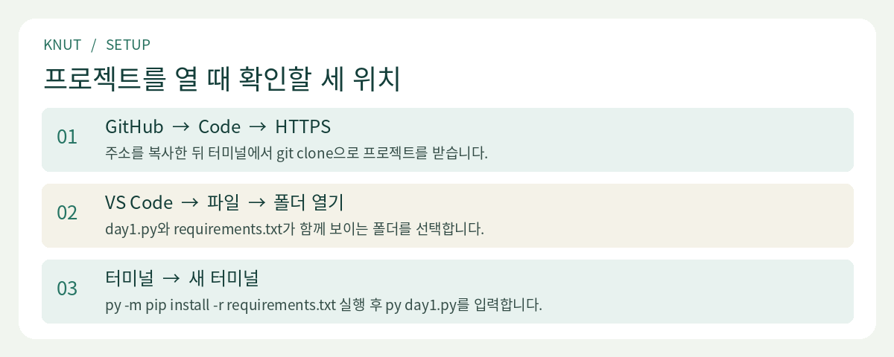

시작하기환경 준비와 첫 실행

프로젝트를 열 때 확인할 세 위치 · 단계 안내도Windows에서 준비하기
- Git for Windows, Python for Windows, VS Code를 설치하세요. Python은 3.12 또는 3.13 환경을 권장합니다.
- 새 터미널에서 아래 두 줄을 각각 실행해 버전이 표시되는지 확인하세요.
git --version
py --version
- 강사가 공유한 GitHub 저장소의 Code → HTTPS 주소를 복사합니다. PowerShell에서 아래 첫 줄을 입력하고 주소를 붙여넣은 뒤 Enter를 누르세요. 다음 두 줄로 복제하고 이동합니다.
$courseUrl = Read-Host "강사가 공유한 저장소 HTTPS 주소"
git clone $courseUrl knut-workshop
cd knut-workshop
- VS Code에서 파일 → 폴더 열기로 knut-workshop을 선택하세요. 공개 전 ZIP으로 연습할 때는 압축을 전부 풀고 day1.py가 보이는 폴더를 열면 됩니다.
- VS Code의 터미널 → 새 터미널에서 다음을 차례로 실행합니다.
py -m pip install -r requirements.txt
py day1.py
py day2.py
- results 폴더에서 엑셀 두 개와 PPT 한 개를 엽니다. 배포된 예시 파일이 있으므로 터미널 완료 메시지와 파일 수정 시각도 확인하세요. 재실행 전에는 결과 파일을 닫습니다.
- VS Code의 채팅에서 GitHub 계정으로 Copilot에 로그인하고 “day1.py의 입력 파일 이름을 알려줘”라고 물어보세요. 별도 브라우저 탭에서 ChatGPT를 열어 설계 대화를 준비합니다.
막혔을 때 확인하기
- py를 찾지 못함 — 설치 후 터미널을 다시 엽니다. python --version으로 Python 3이 확인되면 위 명령의 py를 python으로 바꿉니다.
- requirements.txt를 찾지 못함 — 터미널에서 dir을 실행해 day1.py와 requirements.txt가 함께 보이는지 확인합니다.
- PermissionError — 결과 엑셀과 PPT를 닫고 재실행합니다.
- Copilot 로그인 문제 — VS Code 계정 메뉴에서 GitHub 계정을 확인하고 공식 설정 안내를 참고하세요.